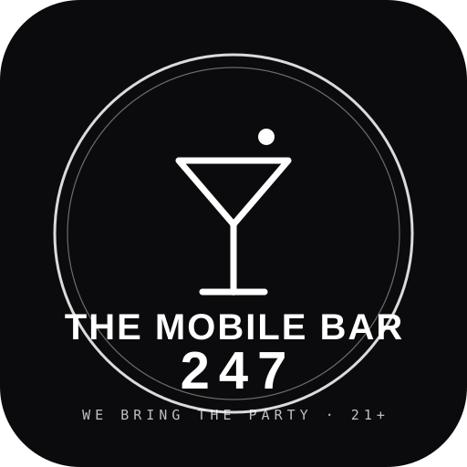
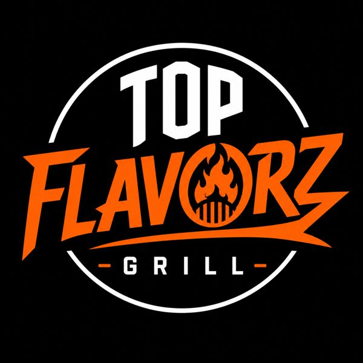

I don't pitch it.
I ship it.
A working archive — brand, software, SaaS, and systems, each designed and built end to end. Toggle Proof Mode to see my exact role and honest status on every project.
CE OS
A founder-run operating-system studio — brand identity, product positioning, full website, and the design system tying it together.
Positioning, identity, site, product model — end to end.
Titanium Detailing
A paid client project for an auto-detailing business — brand, a mobile-first booking site, local pages, and an automatic review flow, designed and built as one connected system.
Brand, mobile site, local SEO pages, and a booking + review flow. Paid client engagement.

The Mobile Bar 247
Marketing and content for a traveling 21+ mobile bar that runs events across PA, NJ, NY, DE, MD and the DMV — Instagram content, short-form, and event promotion built to turn attention into bookings.
Marketing + content lead — Instagram content system, reels, and event promotion. Audience ~5.6K. Active client engagement.

Shiftly / Fair Stand OS
An operating system for local businesses, fairs, and food trucks — POS, staff board, scheduling, payroll, and tips in one installable app, no per-transaction fees.
Product design + build. Real working PWA. Shiftly and Fair Stand OS are the same product.
STAKE
A private acquisition OS for wholesalers and investors — analyze a deal in seconds (MAO, ARV, ROI, risk), run the pipeline, auto-generate contracts, manage cash buyers.
Product + deal-math engine design. Status: building.
PLUG
A TikTok Shop product + content engine — trending product data, a studio that writes hooks and scripts, and a compliance checker so you post winners and protect your account.
Product + content/compliance engine design. Active.
ScrollStop
A TikTok-first viral-gadget store on Shopify — 72 products, lead-capture games, Klaviyo email flows, and a dropship ops dashboard, built to move product at speed.
Store, content system, and ops dashboard. Case page — TODO.
TSO Apparel
Curated resale and one-of-one custom apparel with its own listing tools and inventory — an iced, chrome aesthetic across Depop, Grailed, and eBay.
Brand, aesthetic, listing/inventory tooling. Active venture.
Booking + AI Receptionist
Online booking with Stripe deposits and automatic reminders, plus an AI receptionist that answers FAQs and books jobs 24/7 — retention software installed on top of a site.
Automation + AI flow design. Client-ready demo.
CE OS Command Center
The private hub that runs the studio — scored leads, a quote builder, close-and-retainer scripts, and per-lead status wired to the CRM.
Internal tool design + build. Not client-facing.
CARBYN
DJ, music, and nightlife — the underground-scene alias. A long-game brand, built and run with the same system as everything else.
Brand + creative direction. Personal venture, long-game.

AUXTION
A pay-to-play song-request app for DJs and venues. Guests scan a QR, search a real song, and bid to jump the queue — Request, Priority, or Play Next. The DJ approves what plays; a 10% platform fee runs on every payment.
Product, brand, and build. Static web app + Supabase + Stripe Connect; live Edge Functions (connect · checkout · webhook · refund). Status: live infrastructure.
LIFTWAVE
One commercial DJ platform tying it all together — live visuals (OXYGEN), two-deck mixing (MIX), a soundboard (DROPS), paid requests (AUXTION), plus library, events, and earnings. Built to run DJ's own shows and paying creators' branded workspaces.
Product architecture + brand for a unified SaaS. AUXTION is the live module. Status: building.

Top Flavorz
Leading the full rebrand of Top Flavorz — new identity direction, a matched social content system, a reopening / launch campaign, and internal brand collateral (handbooks, hiring, manager checklists) rolled out across the business.
Rebrand lead — identity direction, content packs, campaign, and internal collateral. Client engagement, in progress.
Overview-only cards get full case pages as real screens come in. Status labels are honest — active, building, concept, or internal.